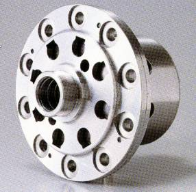
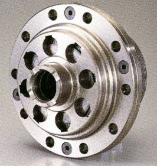
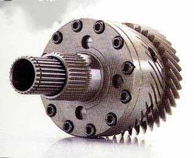

| KAAZ |
|
|
Located in Okayama Japan,
they have offices in Sendai, Tokyo, Kumamoto, Kagoshima and Tae Chung Hsien
(Taiwan) with delivery center in Kanagawa Japan. They supply to Mitsubishi Heavy Industries Ltd.; K-ges Co.,
Ltd.; Ryobi Co., Ltd. and 170 other companies.
As a member of the motor
sports community, KAAZ’s mission is to act and realize the dream of producing
the most effective high performance products and with them strive to reach the
top of the motor sports world.
KAAZ’s consistent commitment
to use planning, research, design, manufacturing and sales to produce products,
provides a higher level of driving performance for motor sports and racing.
With outstanding ideas and state-of-the-art technology, KAAZ have developed
products that beat the competition. KAAZ’s
products have received praise from their users and are used in all classes of
racing both in Japan and other countries.
Even 1/1000 of a second is
crucial in racing. KAAZ racing
parts have been used by many racing teams,
and have achieved a number of great records. From Gymkhana to Pikes Peak,
and more, KAAZ racing parts are designed to be used in all forms of competition
and street applications.
From the beginning, KAAZ
parts are developed by KAAZ’s unique
“New technology, new materials and new methods,” approach and each part is produced
in the latest production system under the strictest quality control.
Always undergoing thorough repeated tests and inspections, each part
strives to deliver the highest
in performance and durability.

Front-engine Rear-drive (FR)
cars are popular with racing driver for their highly responsive driving performance
above all other features. The original
KAAZ LSD (Limited Slip Differential) ensures the maximum clutch plate capacity
to provide stable differential locking.
Steering is so stable that accelerator control is enough to maneuver
the car any way you want.

Increasingly popular Front-engine
Front-drive (FF) cars, although offering excellent driving stability, manifest
such structural problems as inefficient traction, under steering and so forth.
On the other hand, the original KAAZ LSD delivers strong lock efficiency
and large torque transmission capacity, capable of eliminating all these problems.
The LSD provides increased driving stability and brings out the full
potential of the car.

Four Wheel Drive (4WD) owners
have generally observed that, “The vehicles tend to push under and are hard
to turn.” Now, the KAAZ LSD has
changed all that. With the LSD
system installed in the front, center and rear, control is ensured to equal
or better FR cars. It meets the
high-performance demands of racing drivers at any track, including street races
and rallies.